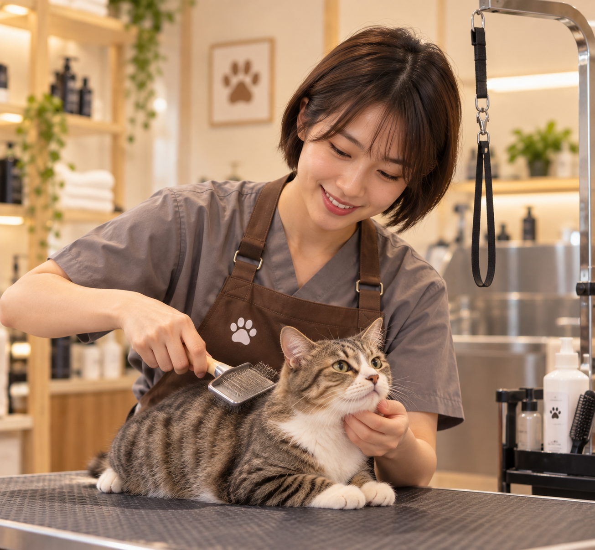
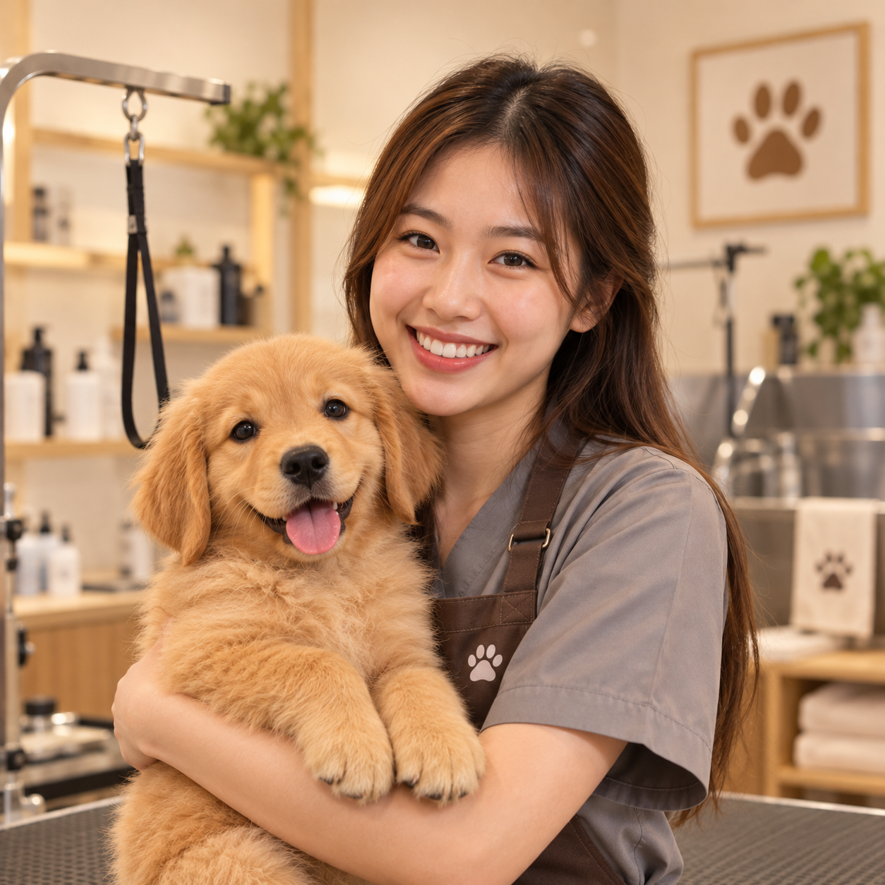
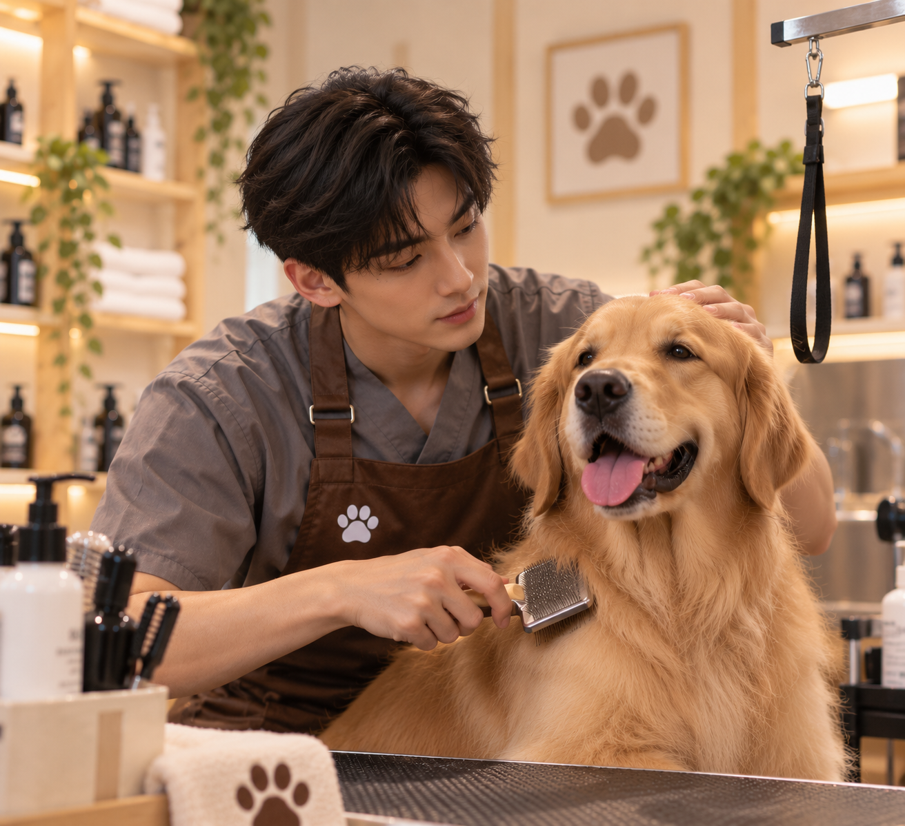
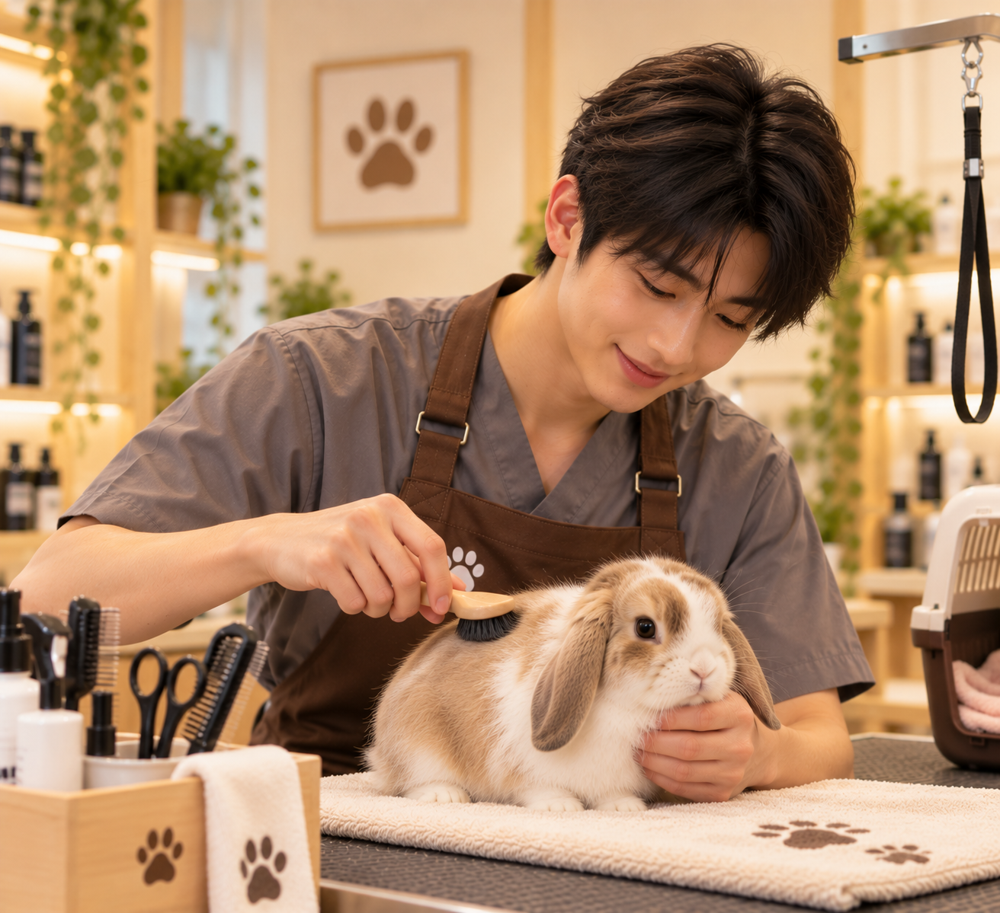

Sophie Wong
6 years experience
Specialty
- Cat grooming
- Anxious cat care
- Flea treatment
Our professional and caring team are passionate about pets and their well-being.

6 years experience

5 years experience

4 years experience

3 years experience
Book a grooming session with our caring team.
Book an Appointment